Wrap-up blogpost
DoME – Digitisation of Museum Entomology
Throughout the summer, our work has been quite varied, but generally falls under three categories: practical experiments we did with off-the-shelf apps, research on processing techniques and difficult to capture characteristics, and designing and building a rig and app to use alongside it.
Practical experiments
In the first week, we started experimenting with the iPhones Anil purchased for the project. We attempted to make some 3D models of insects using Kiri Engine and Polycam. The different attempts had varying levels of success, with the worst attempts having large parts of the specimen missing and the best attempts getting the general shape of the specimen’s wings, but not capturing patterns on the underside of wings or finer details like antennae or legs.
We experimented with insects with many different features. We wanted to test the accuracy of the scans with iridescence, transparency, dark and light colours, legs and antennae (and those that may be partially or completely missing), fluff, shiny surfaces and insects pinned ventrally and dorsally. We found that generally, Gaussian splat processing of about 1000 images (of the available 2000) produced the optimal result in a suitable amount of time. Photogrammetry picked up detailed textures but was more prone to thin artefacts and missing antennae or legs in the capture.
Below are some of our most interesting results from the experimentation phase, as seen in our first weeknote. Left to right: Gaussian splat, photogrammetry, photo. Top to bottom: Dytiscus dimidiatus, and Pine Hawk-moth (Sphinx pinastri), specimen number I.2025.2368.
 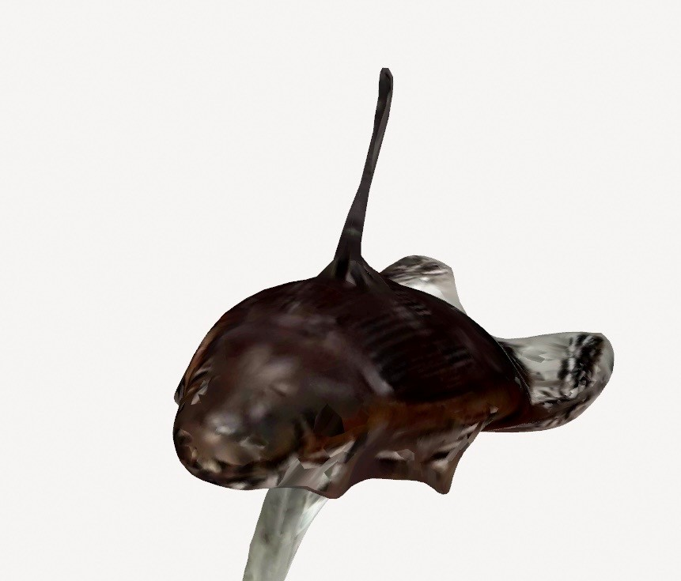
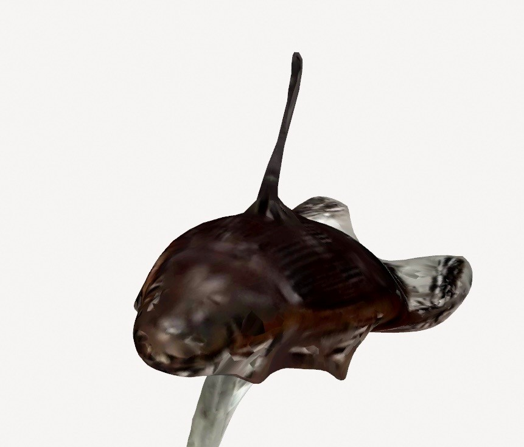

 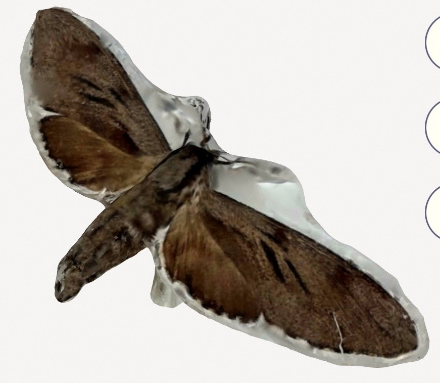
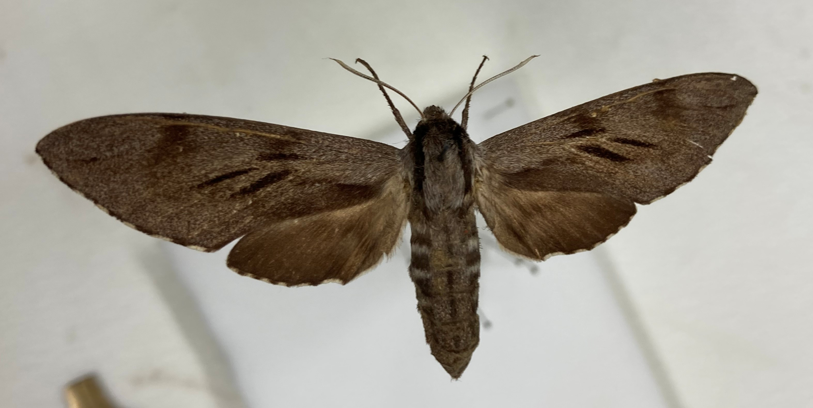
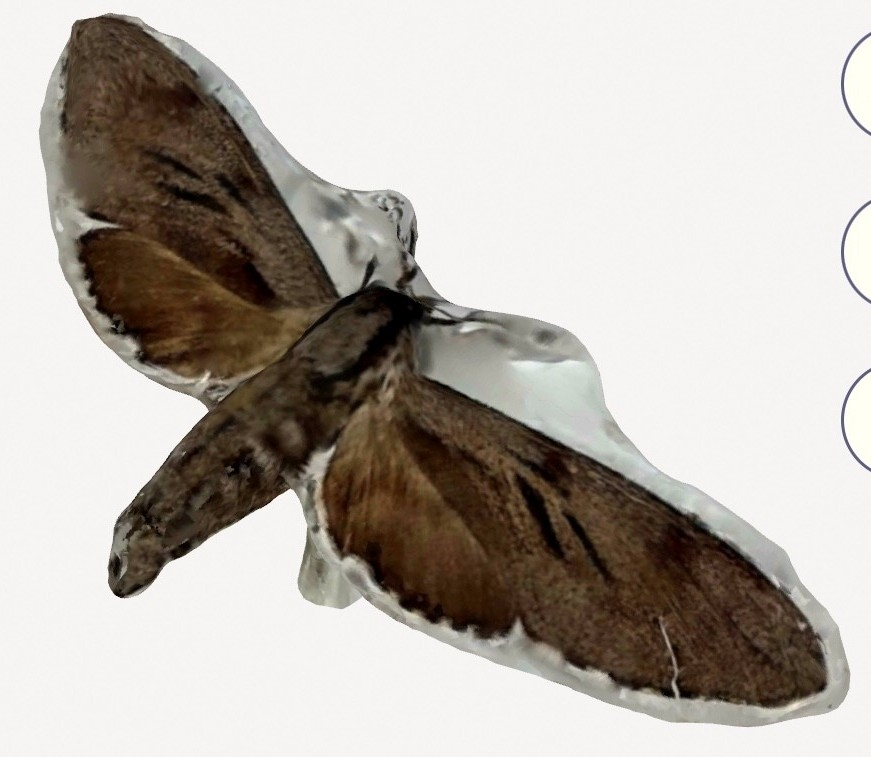
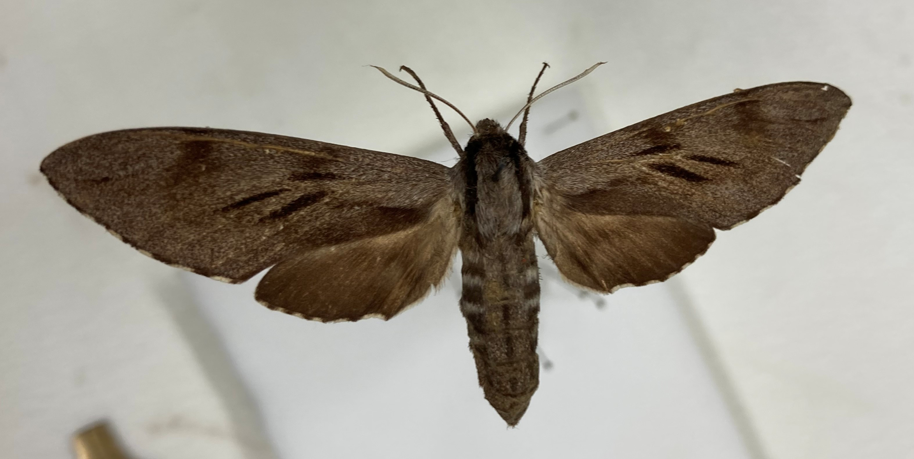
We also learned how to take measurements with calipers and using 2D digitisation and ImageJ (Tiff’s current standard) to compare these to measurements taken with the Polycam measure tool. The majority of these measurements proved to be very similar to those taken with ImageJ, without any calibration.
Processing research
The experiments we did influenced the research we did into processing and pre-processing methods.
We started by looked into a range of Gaussian Splatting variations including reading Differentiable Point-Based Radiance Fields for Efficient View Synthesis, 3D Gaussian Splatting for Real-Time Radiance Field Rendering, and GaussianObject: High-Quality 3D Object Reconstruction from Four Views with Gaussian Splatting. These discuss a range of improvements on processing and rendering speed and capture quality as compared to traditional Gaussian Splatting and reading them helped to gain an understanding of the general method behind Gaussian Splatting.
We also looked into On Scaling Up 3D Gaussian Splatting Training, a new paper out of NYU on distributed Gaussian Splatting. Anil put us in contact with Asst. Prof. Panda, a researcher at NYU working on a distributed method of training gaussian splatting models. We have been communicating with Hexu Zhao, a PhD student at NYU who is researching distributed 3DGS. His research includes the development of Grendel-GS. Hexu has since shared very impressive results, and we look to use the workflow he is developing for processing at the museum in the future.
 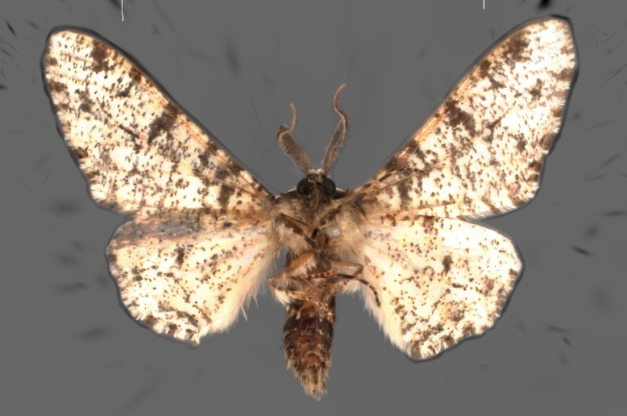
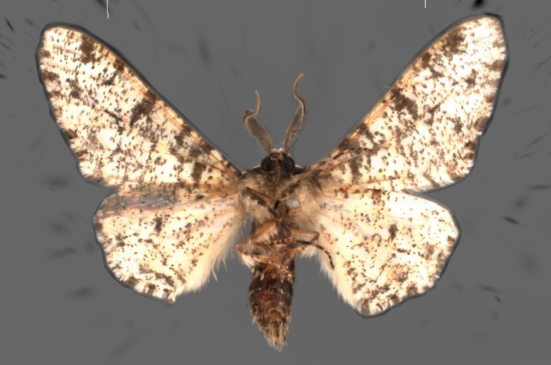
Rig
We created a rig for taking more consistent and partially automated scans.
Our initial idea was a white dome surrounding the specimen, with space for iPhones to be placed at four different angles to capture the entire specimen. Our attempts of scanning nearly white specimens with the current white plastazote background setup with off-the-shelf apps were successful, with no issues in separating the specimen from the background. Each facet of the dome contains holes for lights, to capture some of the darker specimen’s patterns. We also thought of using a ring-shaped turntable to rotate the dome and phone around the specimen, rather than the specimens, to reduce the vibrations and damage to them. Sam Ruggerio-Cakir, the education assistant at the museum, helped us print the first miniature. Our design measures about 57 x 57 x 50 cm, which is too large to be 3D-printed, so we tried cutting the dome in pieces to print and then reassembling using connectors. This was reprinted by Anna, but the assembly wasn’t so successful, and we had to use tape.


We met with Anil Madhavapeddy, Alex Ho and Michael Dales who gave us some invaluable input into the 3D printing and designing of our dome, lighting and photography system. We decided to redesign our dome to only have light sources around the camera for better lighting using LED strips, a smooth interior for a more uniform background, and to scale it down slightly (less than 50cm in diameter) so it would fit in the printer when cut into 8 sections. Anna started working on a second version in Fusion, which addressed these main issues. This version also had smaller holes for the phone cameras to point through, and the addition of a low-angle view slot for a phone to capture all parts of a specimen. The camera positions now being aligned on one side of the dome should also help with creating a smooth background, and for camera holes to not be seen when taking photos from multiple perspectives. A miniature version was printed once again.


Before moving onto a full-sized version of the new dome, Anna printed a small section containing two of the phone slots, to check that they fit well. The slots were able to hold a range of iPhone and phone models, including our 16 Pro. The cameras were also angled correctly, towards the centre of the dome. Small adjustments were made after the testing, such as filleting the camera holes and creating a cover for the bottom slot, then printing of the full dome began, using white PLA filament.

Specimens are illuminated by LED strips while we take photos, and we chose one with a high colour rendering index (CRI>90) and neutral coloured lighting (6000K). These were cut and arranged into squares using hippo connectors around each camera hole, then soldered to USB connectors that run through the cable hole at the bottom of the dome. These can be plugged into a USB hub that allows them to be switched on/off individually. We covered the black USB cables with white cable tape to minimise interference with scanning. All of the components were permanently fixed on the dome using nano tape.
 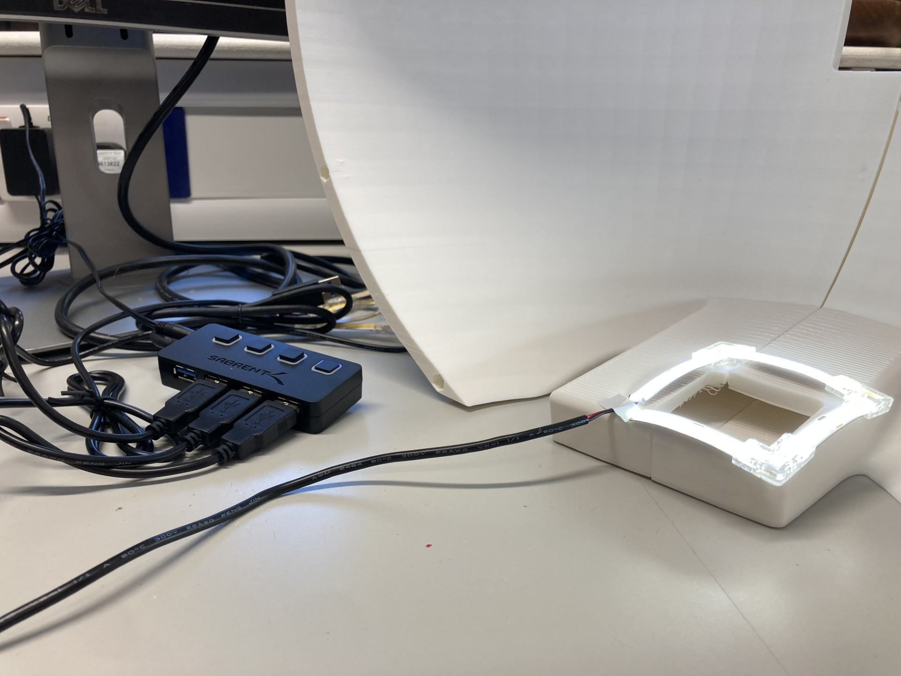
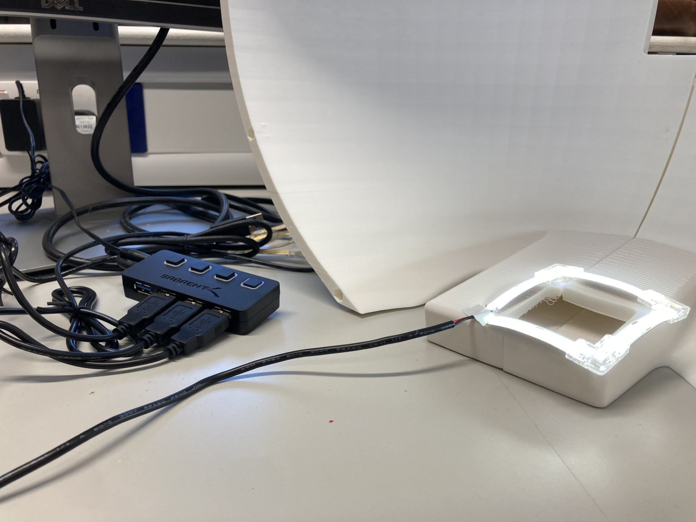
The design of the motorised turntable that will sit under our dome broadly follows this structure with some small necessary changes, including a hole in the middle, so that the dome is spun and not the specimen. The turntable plate is a disc cut from clear plastic with a matte white coating applied, and this was done by Tom, the CS department hardware specialist. Ari designed a stand with an adjustable height for mounting the specimen, and configured a stepper motor to be used with the DM556 microstep driver and a Raspberry Pi to control the rotation of the dome. The gears connecting to the motor were printed by Anna and tested with this setup. Ari also developed an app for taking photos automatically at set intervals on Xcode.
 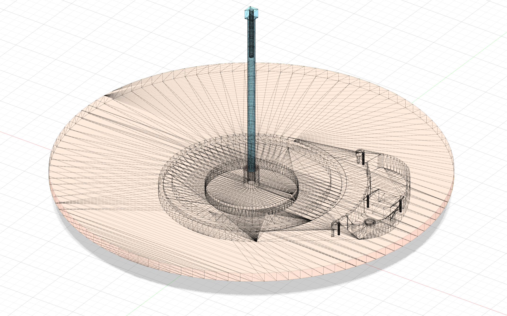
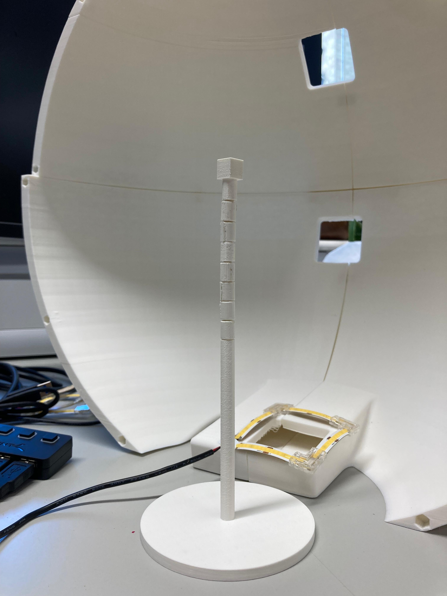
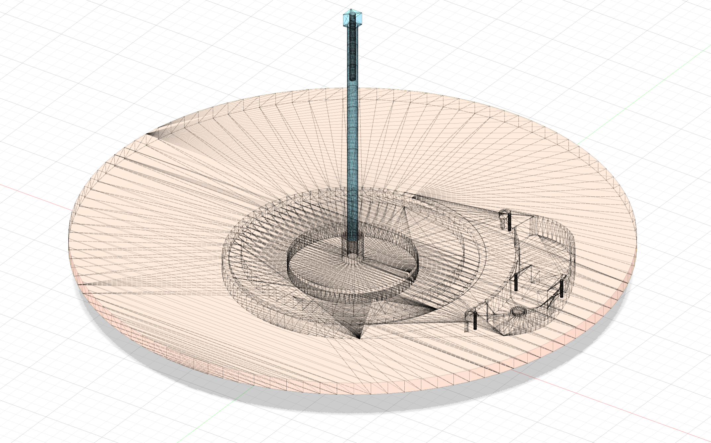
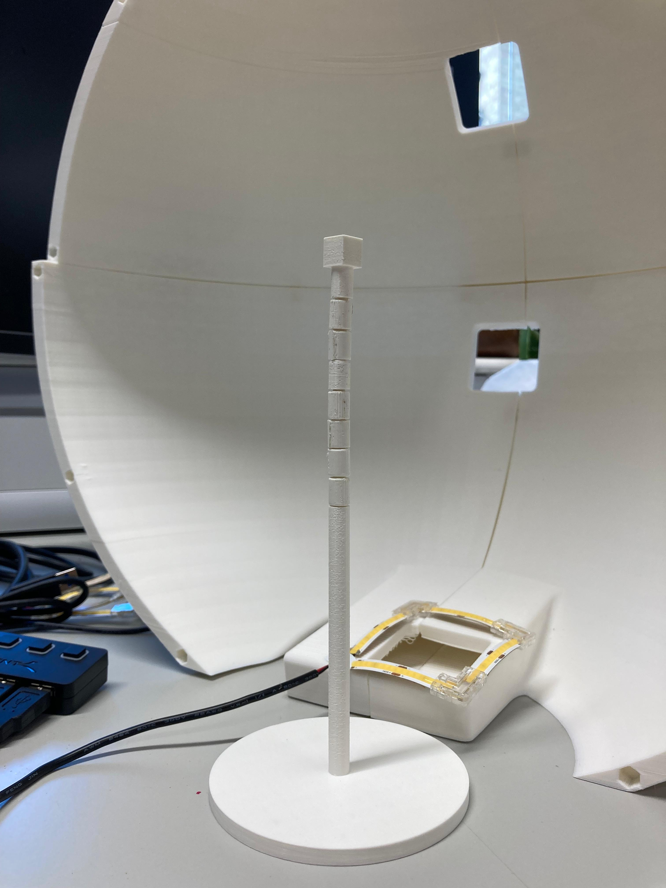
While we were working on the dome, we presented our progress on the project in the Thursday lab lunch meeting to the Insect Ecology and Agroecology groups, describing the solution we have devised and the work we have done so far, as well as the intentions behind it. This was well-received by the audience, including a visiting researcher, Ignasi (Nacho) Bartomeus from Spain who also works extensively with museum collections. One of these was printed by Sam to help us get half of the dome printed by the time we had the presentation.
The dome is now complete with all panels printed by the end of this project. The last panel is attached using small circular magnets instead of dowels, so that it can be easily removed to work with specimens inside the dome. The lighting has been fully attached, and most of the moving turntable has been configured.
Cataloguing
Cataloguing of the British Moths collection has continued on the side throughout the project. Species catalogued include Cream Wave (Scopula floslactata), Smoky Wave (Scopula ternata), Rusty Wave (Idaea inquinata) and Small Fan-footed Wave (Idaea biselata) specimens.
Plans for the future
We have a few extensions in mind for the project, as well as loose ends we would like to wrap up.
For our rig to be used more widely, it would be useful to parametrise the CAD design so the diameter can be altered without altering the size of the phone slots and visa-versa. It would also be useful to have an automatic camera app available for non-iPhones, and be able to view the model straight from the iPhone. Also, it may be more reliable to have the app take photos when it senses the iPhone is stationary, rather than at time intervals. We have also discussed the possibility of bringing the rig to the field and using it on live insect specimens through combining with a cooling system, to reduce their activity and allow scanning.
We are working on formally comparing 3DGS to photogrammetry and LiDAR using data captured with the dome and app, for the purpose of insect specimen digitisation, to learn which characteristics are best captured with which technology. For further extension, we can use the Segment Anything model in 3D to help isolate specific body parts within the 3D model and conduct further analysis of morphological traits. We are also interested in whether using the LiDAR data could enhance 3DGS results, or using different lighting to capture the models with multispectral imagery.
Finally, we would like to say a big thank you to Tiff, Anil and Ed for supervising us on this project! We are also very grateful to Sadiq, Sam, Hexu and Panda for their continued advice and support throughout the project, and the Insect Ecology and Agroecology groups for being so welcoming! We have really enjoyed working on this project and we hope it is useful to the UMZC!